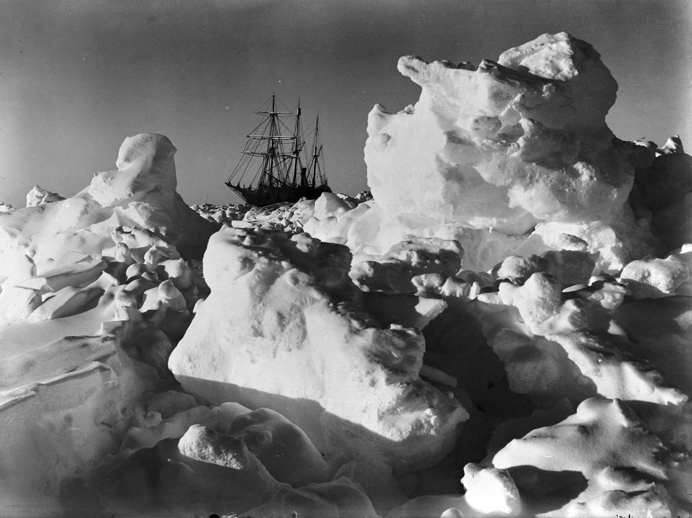
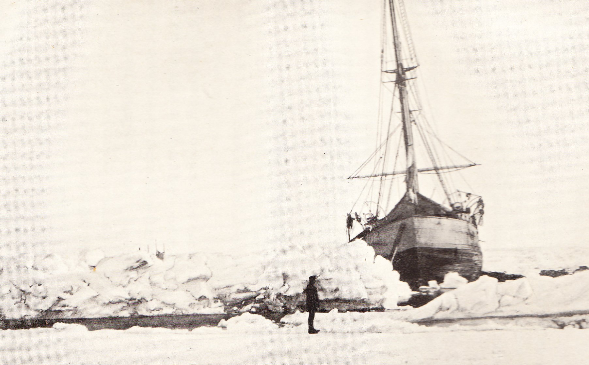
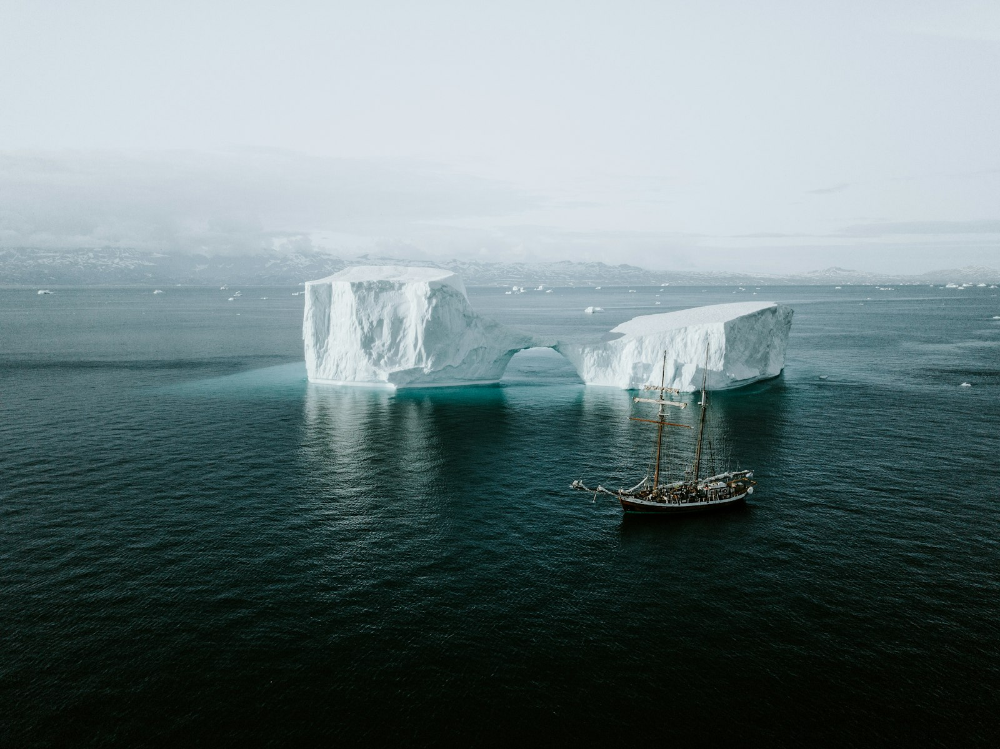

Letter 4
letter-4Summary: The longest and most dramatic letter. The ship becomes trapped in ice. Through the fog, the crew spots a gigantic figure on a dog sled racing across the frozen waste. The next morning, they rescue a man — emaciated, nearly dead, eyes wild — drifting on a fragment of ice with one surviving dog. This is Victor Frankenstein. Over days of recovery, Victor and Walton bond. Victor recognizes in Walton the same dangerous ambition that destroyed his own life, and agrees to tell his story as a warning. The frame narrative closes; Victor's confession begins.
Key visual scene: The ship locked in ice, fog clearing to reveal vast plains of ice stretching to the horizon, a lone figure on a sledge visible in the distance — then a wrecked man on a fragment of ice, barely alive.
Why this image: Hurley's 1915 photograph of the Endurance trapped in Antarctic pack ice — a real ship crushed by real ice. More visceral and immediate than a painting. The documentary quality grounds the fantastical narrative in physical reality. The masts silhouetted against the ice evoke the desperation of Walton's situation.

Desktop 16:9




_-_Joan_of_Arc_in_Prison_-_P604_-_The_Wallace_Collection.jpg){kind=link}
,_1863.jpg){kind=link}
{kind=link}
{kind=link}
{kind=link}